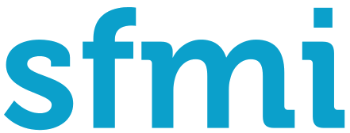
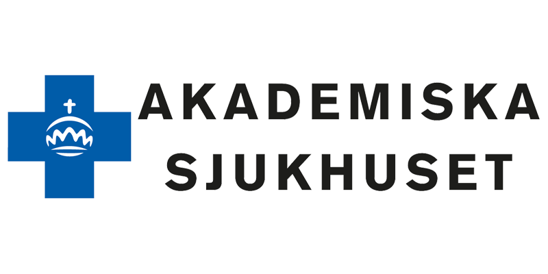
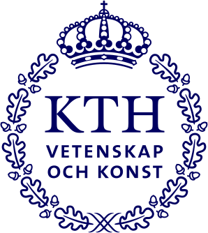
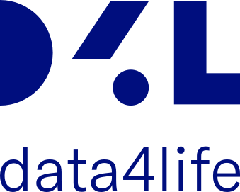
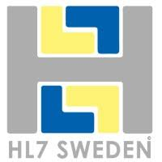

09:00–09:15
Opening words
- Christian Högberg (OMOP 4 Sweden, Passion 2 Improve Sverige AB)
- Olle Bergdahl (Uppsala University Hospital)
- Magnus Lejelöv (STUNS)
OHDSI Sweden Symposium 2026
How to make health data more available and reusable in a reliable way
The symposium brings together researchers, healthcare organizations, authorities, industry, patient organizations and the OHDSI community to explore how the international data model OMOP and complementary standards can support reliable reuse of Swedish health data. Presentations, panels, interactive demonstrations and a poster fair connect practical experience with national priorities and opportunities for collaboration.
Open a session to read its description, format and abstracts.
08:30–09:00
Registration & Mingle
09:00–09:15
09:15–10:15
What are these acronyms all about? What’s in it for Sweden?
Christian Högberg (OMOP 4 Sweden, Passion 2 Improve Sverige AB)
How can we integrate these assets in the Swedish health data ecosystem?
Jordan Kane (OMOP 4 Sweden, Stiftelsen Chalmers Industriteknik)
10:15–10:45
Fika break, Mingle & Poster exhibition
10:45–11:30
Moderator: Lars Lindsköld (SFMI)
11:30–12:30
Lunch, Mingle & Poster exhibition
12:30–13:30
OMOP for epidemiologic research: Experiences from University of Gothenburg and DARWIN-EU
Fredrik Nyberg & Huiqi Li (Sahlgrenska Academy, Gothenburg University)
From workshop to ETL: Mapping Swedish registry data to OMOP with a collaborative approach
Valentina Giunchi & Pablo Maldonado Jimenez (Uppsala Monitoring Centre)
13:30–14:10
From Multi-Modal Data to Real-World Evidence with the Data2Evidence Platform
Ben Illigens (Data4Life & OHDSI Germany National Node)
14:10–14:40
Afternoon break, Mingle & Poster exhibition
14:40–15:10
Anesthesia and intensive care data according to OMOP, practical experiences
Daniel Hall (Region Östergötland)
Standardizing antiemetic treatment data using OMOP in Swedish paediatric oncology
Arja Harila & Ruth Lochan Winton (Uppsala University/Uppsala University Hospital)
From registry to research on OMOP data, lessons from a vasculitis cohort
Morteza Najibi (Lund University)
Mobilizing for OMOP adoption within the region
Simon Wext (Region Skåne/Skåne University Hospital)
15:10–15:20
Moderator: Magnus Lejelöv (STUNS)
15:20–15:50
Bridging Swedish health registries to modern EHR foundation models: Challenges and agentic solutions
Ludvig Hult (Uppsala University)
Harmonizing oncology data with OMOP
Stefano Rapisarda (Karolinska Institutet / SciLifeLab, Region Stockholm)
Region healthcare information platform into OMOP (WiP)
Ola Lövenvald (Region Halland)
Establishing a secure federated infrastructure for standardized Intensive Care data at Karolinska (The INDICATE project: Stockholm Region)
Logan Froese (Karolinska University Hospital)
15:50–16:00
Moderator: Magnus Lejelöv (STUNS)
16:10–17:00
Lars Halvorsen (Passion 2 Improve Sverige AB, edenceHealth NV)
Huiqi Li, DARWIN-EU Data Partner (Sahlgrenska Academy, Gothenburg University)
17:00–17:15
17:15–18:00
Mingle, Networking & Poster exhibition
Connect and build new relationships or spend some extra time exploring the poster exhibition a last time.
OMOP in action!
Discover the people, projects and ideas shaping the emerging OMOP community in Sweden. The poster exhibition gives early practitioners, or those with project ideas and solutions including OMOP, an opportunity to showcase their work, share first experiences and connect with others exploring OMOP and OHDSI. Explore projects, exchange ideas, and spark conversations that could lead to new collaborations.
Posters are presented during all breaks, lunch and the closing networking session.
OMOP 4 Sweden – Making OMOP a formal part of the Swedish health data ecosystem
Christian Högberg, Passion 2 Improve Sverige AB
The OMOP School – A practical bootcamp building broader OMOP awareness and hands-on capabilities for OMOP data harmonization and analysis
Christian Högberg, Passion 2 Improve Sverige AB, and Lars Halvorsen, edenceHealth NV
OHDSI Sweden – The national chapter of OHDSI gathering individuals and organizations working with or interested in the OMOP CDM
Jordan Kane, Stiftelsen Chalmers Industriteknik
Cohort Profile – SWEdish register-based Evidence for Pharmacovigilance (SWEEP)
Judith Brand, Uppsala Monitoring Centre
We have mapped Swedish registry data to OMOP – and this is our experience
Michele Fusaroli, Uppsala Monitoring Centre
Data Quality Assessment of SWEEP: A work in progress
Valentina Giunchi, Uppsala Monitoring Centre
Launching OMOP Implementation on Swedish Health data – Tools and Workflows
Stefano Rapisarda, Karolinska Institutet / SciLifeLab, Region Stockholm
Case report of AI use in automated NCSP mapping
Ludvig Hult, Uppsala University
Event organizers
Event sponsors

Organizations participating in the program





OMOP 4 Sweden funding partners
OMOP 4 Sweden is financed by Swelife, Vinnova and some of the participating players in the consortium (grants 2025-01744 and 2025-04881).